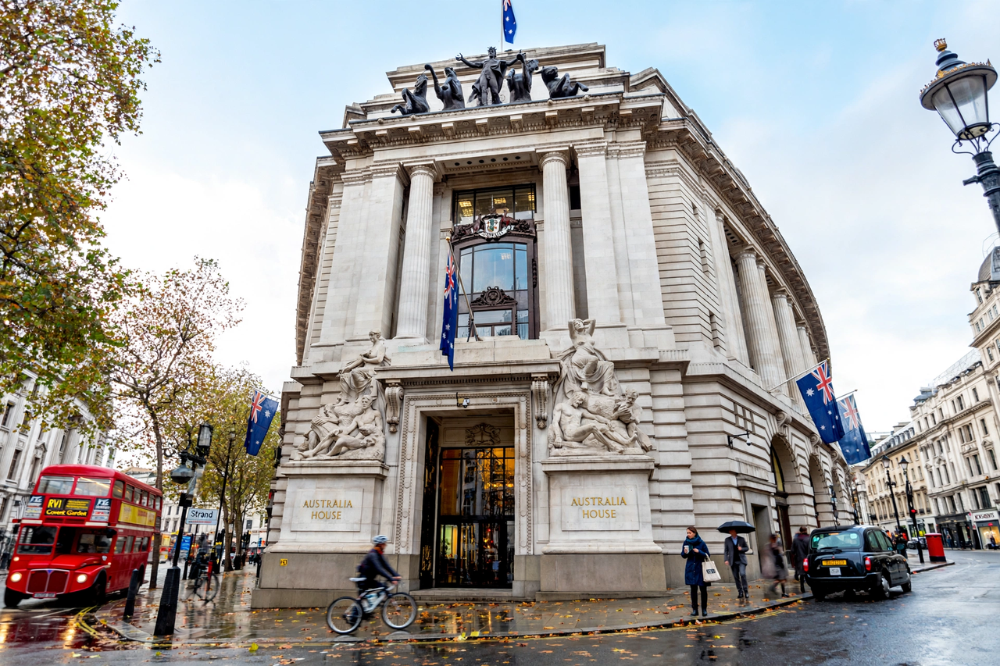

High commission (diplomacy)

In the Commonwealth of Nations, a high commission is the diplomatic mission of one Commonwealth government to another — the equivalent of an embassy between non-Commonwealth states. Its head is a high commissioner, who ranks with an ambassador. The terminology reflects the Commonwealth tradition that member states, historically sharing a monarch, did not exchange ambassadors in the ordinary foreign sense.
History
The office originated in the 19th century, when the self-governing Dominions appointed agents-general and then high commissioners in London to represent their interests; Canada appointed the first, in 1880. As the Dominions became fully sovereign states, their high commissioners evolved into full diplomatic representatives, and the practice extended throughout the Commonwealth after the Second World War.
Functions
A high commission performs the same functions as an embassy: representation, negotiation, reporting, protection of nationals, consular services and promotion of trade and cultural links. Within a capital, the high commissioner is a member of the diplomatic corps on equal footing with ambassadors. Where a Commonwealth member leaves the Commonwealth, missions are converted to embassies; conversely, countries joining or rejoining convert embassies to high commissions.
Residences and usage
The mission's offices are the chancery, and the high commissioner's official residence parallels an ambassador's residence. Examples of notable high commission buildings include Canada House and Australia House in London, and India House (the Indian High Commission) at Aldwych. The term "high commission" is also used for certain other bodies — for example the United Nations High Commissioner for Refugees directs an agency, not a bilateral mission — but the diplomatic usage among Commonwealth states is the primary one. See also Diplomatic mission.